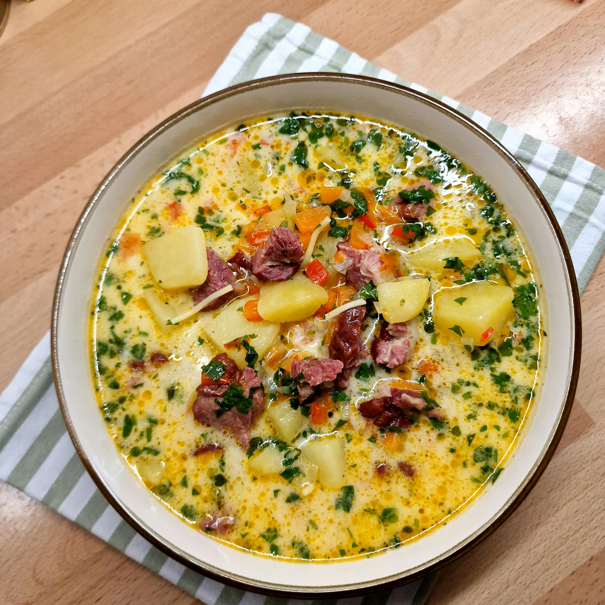

Cajun Potato Soup

Ingredients
- 1 Cajun Sausage
- 1 Clove Garlic
- 1 Onion
- 1 Red/Green Bell Pepper
- 1 TBS Cajun Seasoning
- 1/4 tsp Cayenne
- 4 Russet Gold Potatos
- 4 Cups Broth
- 1 Cup Shredded Cheddar Cheese
- 1/2 Cup Heavy Cream
- Salt & Pepper to taste
Steps
- Cut the sausage into 1/2 inch pieces
- In a stock pot, brown the sausage on medium heat, flipping once
- While sausage is browning, dice garlic, onion and bell pepper
- Once browned on both sides, remove the sausage
- Add galic to the pot, browning slightly
- Add onion and cook until translucent, you can add a pinch of salt at this time
- Add bell pepper, cook until softened
- Wash and cut potatos into 1/2 inch cubes
- Add in potatos, broth, Cajun and Cayenne
- Simmer for 30 minutes or until potatos are fork tender
- Add in cheese and stir until melted
- Remove from heat and stir in cream
- Serve immedately
Home